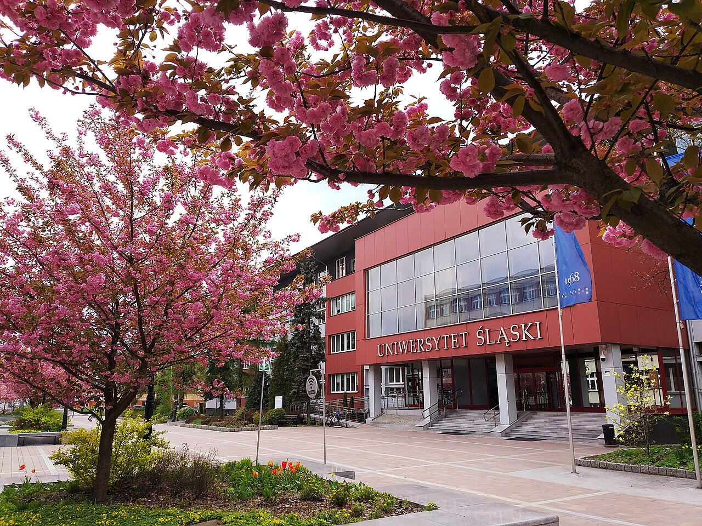

Main Content

Uniwersytet Śląski w Katowicach (UŚ) – polski publiczny uniwersytet w Katowicach, który został utworzony 8 czerwca 1968 jako dziewiąta tego typu instytucja w Polsce.
Podejmowane w dwudziestoleciu międzywojennym starania o utworzenie w polskiej części Górnego Śląska uniwersytetu były procesem złożonym, a jego początek należy datować na rok 1921. Pierwsza inicjatywa powołania w województwie śląskim w 1921 uczelni należała do bpa Stanisława Adamskiego oraz Wojciecha Sosińskiego, posłów na Sejm Ustawodawczy. Z wnioskiem ustawodawczym nr 2455 z dnia 3 lutego 1921 r. na forum parlamentarnym wystąpili posłowie m.in.: ks. dr Władysław Chrzanowski, ks. Dachowski, ks. Kaczyński, ks. Hałko, W. Sosiński i inni z Chrześcijańsko-Narodowego Stronnictwa Pracy. Zgłoszenie wniosku o przygotowanie założenia w województwie śląskim uniwersytetu i politechniki nie miało jednak szans na realizację, przede wszystkim z powodu niedoboru personelu naukowo-dydaktycznego.
Myśl o utworzeniu w województwie śląskim tego typu placówki pojawiła się ponownie pod koniec lat 20 XX w. Potrzeba stworzenia w Katowicach instytucji, która m.in. podnosiłaby kwalifikacje nauczycieli szkół powszechnych i średnich zaowocowała powołaniem w 1928 roku Instytutu Pedagogicznego w Katowicach. Z czasem planowano przekształcenie ośrodka na uniwersytet, ambitnych założeń nie udało się jednak wtedy urzeczywistnić. Program kursów dokształcających w Instytucie obejmował głównie przedmioty pedagogiczne, uzupełniane przez przedmioty nauczane w szkołach powszechnych i średnich oraz pomocnicze (filozofia, biologia wychowawcza, antropologia pedagogiczna, socjologia wychowania). Poza działalnością dydaktyczną, Instytut angażował się w prace naukowo-badawcze oraz wydawnicze. Wybuch II wojny światowej przerwał rozwój katowickiego ośrodka dydaktycznego, jednak już w marcu 1945 roku rozpoczęto działania zmierzające do jego reaktywacji, jedynie reaktywując przedwojenne Państwowe Pedagogium oraz Instytut Pedagogiczny.
Instytut Pedagogiczny w Katowicach nie posiadał uprawnień szkoły wyższej, a potrzeba powołania do życia instytucji zaspokajającej nie tylko potrzeby edukacyjne województwa śląskiego, ale również pełniącej funkcję ogniska polskiej kultury była nadal żywa. Z tego też powodu ponownie podjęto starania o utworzenie w Katowicach uniwersytetu. W maju 1945 roku powstał Obywatelski Komitet Przygotowawczy Uniwersytetu Śląskiego w Katowicach. Efektem pracy Komitetu był Memoriał w sprawie założenia Uniwersytetu w województwie śląsko-dąbrowskim szeroko uzasadniający postulat utworzenia Uniwersytetu Śląskiego. „Komitet ten wypracował konkretny plan organizacyjny, kadrowy, lokalowy i gospodarczy”[2]. Wbrew oczekiwaniom i nadziejom, ówczesne warunki społeczno-polityczne nie były sprzyjające dla tej inicjatywy.
W 1946 roku powołano Państwową Wyższą Szkołę Pedagogiczną w Katowicach. W 1947 roku została jednak przeniesiona do Łodzi decyzją władz państwa i włączona do tamtejszej PWSP). W 1950 roku powołano do życia ponownie Państwową Wyższą Szkołą Pedagogiczną w Katowicach, która zajęła miejsce likwidowanego ostatecznie Instytutu Pedagogicznego w Katowicach. W ten sposób PWSP w Katowicach – pierwotnie utworzona w 1946 roku – wznowiła swą działalność na terenie Katowic, a jej rektorem został prof. Józef Pieter. Pierwsze lata funkcjonowania uczelni były trudne, jednak późniejszy okres przyniósł znaczny rozkwit uczelni. PWSP (już jako Wyższa Szkoła Pedagogiczna w Katowicach) uzyskała pełnię praw akademickich, stworzono na niej 9 kierunków studiów (4 humanistycznych i 5 ścisłych).
W latach 50 XX wieku na nowo odżyły nadzieje związane z utworzeniem w województwie katowickim wyższej szkoły humanistycznej. W 1957 roku na łamach tygodnika „Przemiany” prof. Józef Pieter pisał: „W ramach zasadniczej rewizji naszego szkolnictwa wyższego miejsce poczesne powinna znaleźć stara i zaniedbana, lecz wciąż aktualna, sprawa uniwersytetu dla okręgu górnośląskiego; sprawa Uniwersytetu Śląskiego w Katowicach. Aktualna jest ona nieledwie od chwili przyłączenia Górnego Śląska do Polski, to jest od roku 1921. […]
Największe w Polsce, około trzymilionowe skupisko ludności Górnego Śląska powinno mieć swoją wszechstronną uczelnię akademicką w postaci uniwersytetu. Nie mając jej, ludność Śląska jest w sposób jawny pokrzywdzona. […]
Kilka wyższych szkół już jest, to prawda, lecz jako uczelnie zawodowe mają one niewielkie szanse rozwoju […]. Uniwersytet to nie jest po prostu wieloliczbowa szkoła zawodowa. Jest to i być powinien – najbardziej twórczy ośrodek nauki i kultury, ośrodek intelektualny z najlepszymi warunkami do pracy badawczej […]. Takiego właśnie ośrodka naukowego Śląsk Górny żąda dla siebie ze względów kulturalnych i politycznych […]”[3].
Tymi słowami, w artykule Kiedy Uniwersytet w Katowicach?, ówczesny rektor PWSP w Katowicach upominał się o utworzenie w stolicy województwa wyższej szkoły humanistycznej. Kwestię tę podnosił również publicysta Stowarzyszenia PAX Szczepan Balicki. W artykule zatytułowanym Dziś Śląsk czeka na uniwersytet pisał: „Sieć wyższych uczelni już na pierwszy rzut oka wykazuje rażąca niesprawiedliwość polegającą na tym, że najludniejsze województwo, tj. katowickie, pozbawione jest uniwersytetu. Sprawa ta urosła do rangi poważnego problemu […]. Stworzono Politechnikę, Akademię Medyczną, W(yższą) S(zkołę) P(edagogiczną). Lecz na uniwersytet zabrakło tchu…”[4].
W czerwcu 1962 roku podjęto efektywne próby zainstalowania Filii Uniwersytetu Jagiellońskiego w Krakowie w Katowicach, było to przełomowe wydarzenie dla inicjatywy tworzenia uniwersytetu. Początkowe plany uruchomienia w Katowicach zamiejscowych studiów humanistycznych uległy znacznej modyfikacji, ostatecznie otworzono kierunki matematyczne, fizyczne, nauki chemiczne? oraz studia prawnicze. Stanowisko prorektora do spraw Filii UJ objął prof. Kazimierz Popiołek. Ciągle żywa potrzeba utworzenia samodzielnego ośrodka uniwersyteckiego w miarę upływu czasu nabierała bardziej realnych kształtów, między innymi dzięki koncepcji połączenia dwóch uczelni – Wyższej Szkoły Pedagogicznej w Katowicach i Filii UJ w Katowicach. Rozmowy prowadzone z Ministerstwem Oświaty i Szkolnictwa Wyższego zaowocowały opracowaniem perspektyw rozwoju katowickiego ośrodka uniwersyteckiego, docelowo otwarcie uczelni przewidywano w roku 1975.
Ostatecznie decyzja Rady Państwa PRL w sprawie powołania uniwersytetu zapadła w 1968 roku[5], w Projekcie połączenia Wyższej Szkoły Pedagogicznej z Filią Uniwersytetu Jagiellońskiego możemy przeczytać: „[…] 3. Wnioskuje się, aby przed rozpoczęciem nowego roku akademickiego 1968/1969 do miesiąca września 1968 r. połączonym uczelniom Filii UJ i WSP nadać nazwę »UNIWERSYTET ŚLĄSKI W KATOWICACH«”[6]. Na stanowisko rektora nowej uczelni powołany został prof. Kazimierz Popiołek, uroczysta inauguracja pierwszego roku akademickiego odbyła się 1 października 1968 roku. Uczelnia rozpoczęła działalność, licząc 5724 studentów (na studiach dziennych, wieczorowych i zaocznych) kształcących się na czterech wydziałach: Humanistycznym; Matematyki, Fizyki i Chemii; Prawa i Administracji; Wychowania Technicznego.